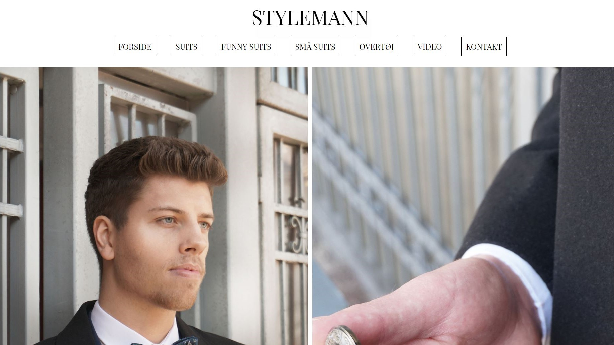
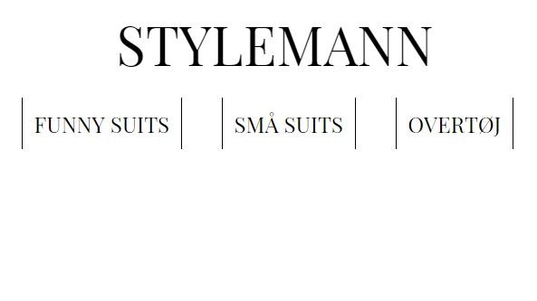
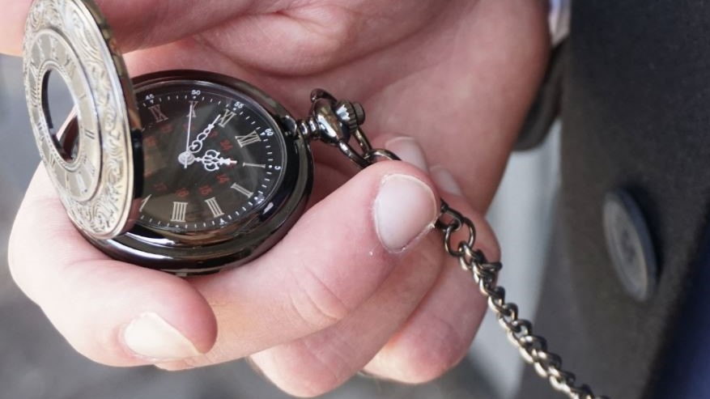
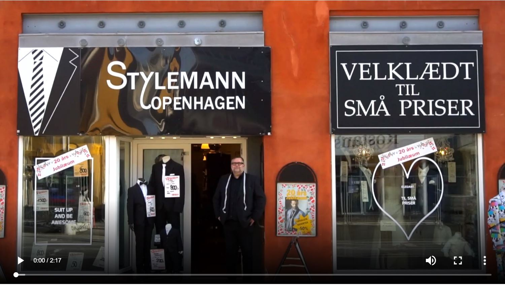

Tema 2 - 02.02.06 - redesign_af_website
Se den fulde opgave her
I dette tema blev vi undervist i hvordan vi bruger redskaber som Adobe Photoshop, Premiere pro og viderebyggende viden om HTML og CSS. Derudover lærte vi hvordan man kunne gøre en video mere spændende med filmtekniske virkemidler som B-rolls, dramaturgi og planlægning af filmning og fotografering. Derudover fik vi et indblik i hvordan man aftalte og arrangerede samarbejdet med en virksomhed i et redesign af deres website.
I min gruppe lavede vi et redesign af en tøjbutiks hjemmeside (Stylemann.dk), med tilhørende billeder og video. Vi kunne i dette projekt bygge videre på vores viden fra tema 1, hvor vi havde lært at lave et responsivt website. Vi designede siden, så den blev meget simpel og stilren. Sidens farver bestod primært af sort/hvid, så de fik et raffineret look, for at drage en parallel til jakkesættet, som primært var det der blev solgt i butikken.

Det samme gælder fonten som vi valgte at implementere i sidens overskrifter og menupunkter, som havde seriffer, eftersom vi havde lært at det ville give siden et elegant og formelt udtryk.

I photoshop kunne vi definere billedstilen, så den bestod af kolde farver i baggrunden, med sort/hvidt beklædning, i et forsøg på at skabe en kontrast i huden og enkelte elementer af billederne. Dette gjorde vi for at afspejle den klare kontrast, mellem en skjorte og blazer.

Videointerviewet blev redigeret i premiere pro, hvor vi med hjælp af nogle transitions kunne veksle mellem medium-shots af butiksindehaveren og B-rolls, der viste omgivelserne og varerne i butikken. Derudover kunne vi med premiere pros transitions og audio effects, lave en videotitel der dukkede op, i starten af videoen, hvor vi med audio effects kunne time lyden, så musikken passede med effekten.
